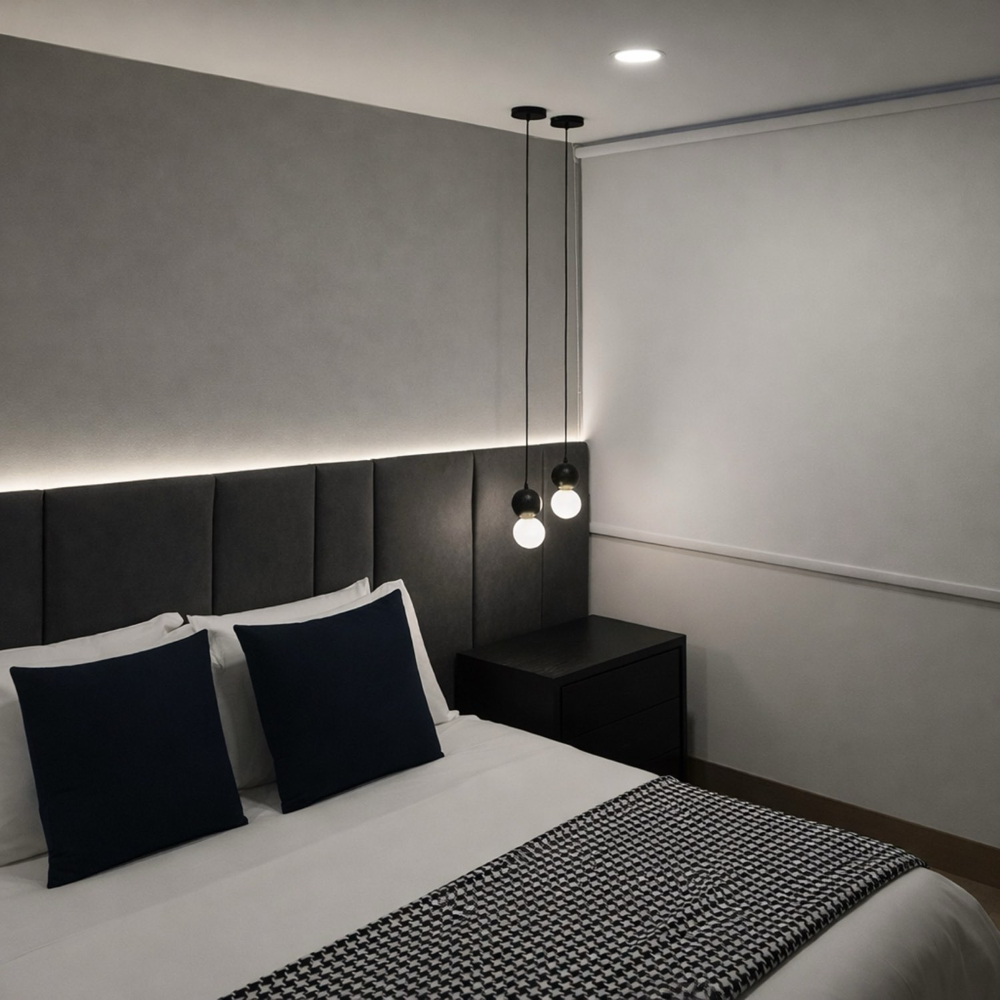
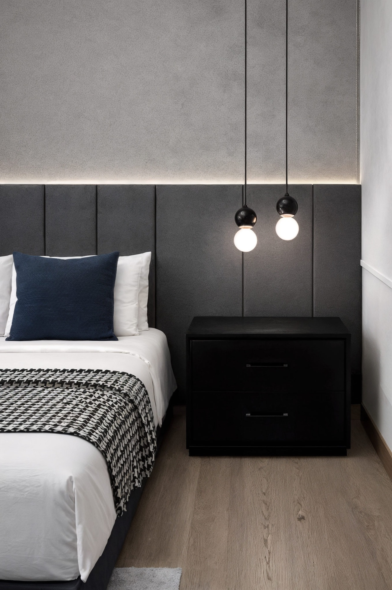

Soy Jaime Buzali Davison, arquitecto en formación en la Universidad Iberoamericana. Me interesa el espacio como secuencia de atmósferas: cómo entra la luz, cómo se siente un material y cómo se recorre un lugar. Trabajo del concepto a la obra, de la mesa de dibujo a la coordinación de oficios, y por eso cuido el detalle hasta el resultado terminado.
Licenciatura en Arquitectura
Universidad Iberoamericana
2022 — presente
Residente de obra
Despacho Miguel Ángel Aragonés
Remodelaciones independientes
AutoCAD · Revit · SketchUp
Twinmotion · Photoshop
InDesign · Illustrator